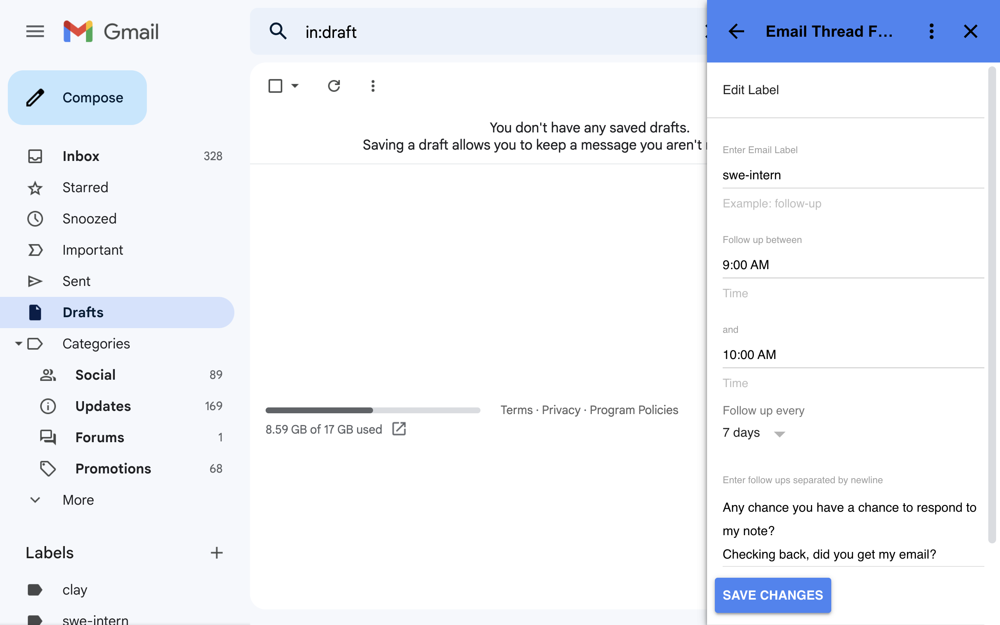

Email Thread Follow Up
Email Thread Follow Up is a Gmail addon that helps users follow up on cold email threads where no one has yet responded. It is a set it and forget it system. No manually follow work needed.
Emails tagged with a certain label get follow ups. A label contains information such as how frequent to follow up, the hours within the day to follow up, and the possible canned one liner messages to be used in follow up.
On the Free Plan, users are limited to one follow up per email thread. On the Premium Plan, there is no such limitation and the recipient keeps receiving follow ups until all the canned one liner messages for the particular label are used up.



Features
- Labels each containing follow up specifications and can be applied across different emails.
- Once an email is tagged with a follow up label, follow ups occur in the background. You see an email reappear in the inbox as unread only if the recipient responds.
- The addon selects a random time between the start and end hours you specified to follow up. This way it seems more like is a real person is following up.
- Each time during follow up, a random new follow up oneliner is choosen from your list of one liner follow ups. That is, as long as it has not yet been used within the email thread.
- Follow up happens within the same thread. The recipient can see all the your previous emails which they ignored. They will think you are persistent.
Pricing
- Free Plan gets one follow up per email thread.
- Premium Plan plan ($5/month) gets unlimited follow ups per email thread.
- No advertising tracking
- Your email is shared with Stripe to check whether you have subscribed to Premium Plan
Privacy Policy
Email Thread Follow Up requires access to certain scopes to work.
- gmail.addons.execute is used for executing the addon.
- gmail.readonly is needed to select the emails you tag for follow up.
- gmail.compose is required for composing the follow up.
- gmail.modify is used to remove the label from email thread when all oneliner follow ups have been used.
- script.scriptapp is used to run the script on the every midnight to check whether a follow up trigger needs to be scheduled for the following day.
- userinfo.email is used so the follow up emails sent by the addon say they are from you.
- script.external_request is for connecting to Stripe to check whether your email has subscribed to Premium Plan.
- script.locale is used to get your current timezone for follow ups to be based on.
Email Thread Follow Up's use and transfer to any other app of information received from Google APIs will adhere to Google API Services User Data Policy, including the Limited Use Requirements.
Terms of Service
Use Email Thread Follow Up responsibly. The creator of this Gmail add-on shall not be liable for what you do with this add-on. Keep in mind that Google has a daily cap on the number of times you can run the add-on. Due to the addon being persistent with follow up you may receive positive and negative responses from recipients. If someone tells you to stop emailing them then stop.
Canned Oneliner Follow Up Ideas
For now the addon can only do oneliner follow ups. They are chosen in random order from your list of follow ups so avoid phrases that suggest you previously followed up such as "checking back again" and "sorry to keep bothering you". As for generic oneliner ideas, here are some:
- Any chance you have a chance to respond to my note?
- Checking back, did you get my email?
- Hey, hope you are well. Just wanted to check on the status of my email
- Hope you saw my first email
- I know you are really busy, but any chance you can follow up on my note below?
- I look forward to your response
- I sent you an email. Any chance you have time to respond?
- I sent you the note last week, any chance you have time this week to respond?
- I understand you are busy, so you may have missed my email. Check to see if you received it
- Just a reminder that I send you an email. Hope to get a reply soon
- Just hope you received my email
- Just moving my email to the top of your inbox. I know you are really busy
- Just trying to see if you might have time for my note
- Looking forward to your reply
- Maybe it got lost in the inbox, can you check if you got my email?
- Receive a lot of emails? I understand. Hope to receive a response soon
- Sorry to bug you, but I am just checking to see if you might have time to respond
- Thanks if you are reading this. Could you see if you got first email?